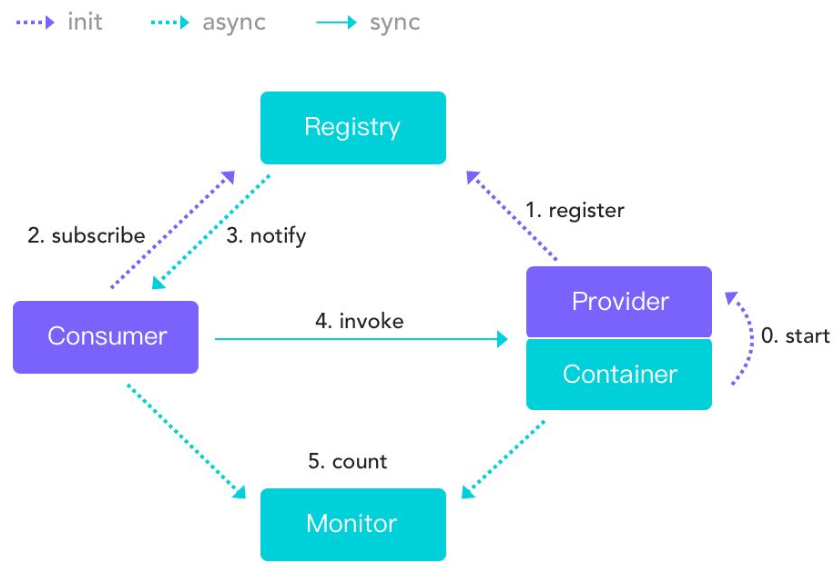

原文连接:https://www.cnblogs.com/yuming2018/p/11757167.html
SOA架构(Service Oriented Ambiguity)面向服务架构
- 有一个或多个与数据库交互并 向外提供服务的的单元,在注册中心注册向外提供的服务
- 其他单元不与数据库进行交互,从注册中心获取提供的服务单元的一系列信息,并直接调用提供服务的单元.
- 这样的设计避免了根据业务区分模块,每个业务模块都与数据库进行交互,有一些相同的操作会在不同的模块冗余地存在
常用的服务:
Dubbo.WebService,Dubbox,Web项目
RPC(Remote Procedure Call Protocol)远程过程调用协议
客户端通过互联网调用远程服务器,不知道远程服务器具体实现,只知道远程服务器提供了什么功能.
本次主要学习Dubbo这种rpc框架
Dubbo简介
一个分布式、高性能、透明化的RPC服务框架
提供服务自动注册、自动发现等高效服务治理方案.
Dubbo架构图
- Provider :提供者,服务发布方.
- Consumer:消费者, 调用服务方
- Container:Dubbo容器.依赖于Spring容器.
- Registry: 注册中心.当Container启动时把所有可以提供的服务列表上Registry中进行注册.作用:告诉Consumer提供了什么服务和服务方在哪里.
- Monitor:监听器
- 虚线都是异步访问,实线都是同步访问
- 蓝色虚线:在启动时完成的功能
- 绿色虚线(实线)都是程序运行过程中执行的功能
- 所有的角色都是可以在单独的服务器上.所以必须遵守特定的协议.

运行原理:
- 启动容器,相当于在启动Dubbo的Provider
- 启动后会去注册中心进行注册.注册所有可以提供的服务列表
- 在Consumer启动后会去Registry中获取服务列表和Provider的地址.进行订阅.
- 当Provider有修改后,注册中心会把消息推送给Consummer 使用了观察者设计模式(又叫发布/订阅设计模式)
- 根据获取到的Provider地址,真实调用Provider中功能. 在Consumer方使用了代理设计模式.创建一个Provider方类的一个代理对象.通过代理对象获取Provider中真实功能,起到保护Provider真实功能的作用.
- Consumer和Provider每隔1分钟向Monitor发送统计信息,统计信息包含,访问次数,频率等.
Dubbo支持的注册中心:
Zookeeper
优点:支持网络集群
缺点:稳定性受限于Zookeeper
Redis
优点:性能高.
缺点:对服务器环境要求较高.
Multicast
优点:面中心化,不需要额外安装软件.
缺点:建议同机房(局域网)内使用
Simple
适用于测试环境.不支持集群.
Dubbo支持的协议:
Dubbo
Dubbo官方推荐的协议.
本质:使用NIO和线程池进行处理.
缺点:大文件传输时可能出现文件传输失败问题.
RMI
JDK提供的协议,远程方法调用协议.
缺点:偶尔连接失败.
优点:JDK原生,不需要进行额外配置(导入jar)
Hession
优点:基于http协议,http请求支持.
缺点:需要额外导入jar,并在短连接时性能低
Dubbo中Provider搭建:
Provider分别创建service接口项目与serviceimpl项目,目的是不希望Consumer知道具体的实现
如果实现类与接口在同一个项目,Consumer调用接口就需要依赖这个项目,那么就会知道具体的实现
Demo项目的github地址为这里
Demo的项目结构如上图所示,maven聚合工程,ym-parent为父项目;ym-service为Provider的service接口;ym-entity为实体类项目,集中存放实体类;ym-dubbo为Provider的service接口实现;ym-managerment为业务web项目,调用dubbo提供的接口,是Consumer.
dubbo-admin为dubbo官方提供的dubbo管理工具,能够查看在注册中心注册的提供者与消费者.
他们的依赖关系为:
ym-service依赖ym-entity:编写dubbo向外提供服务的接口,需要依赖实体类,并且实体类必须要实现Serializable,因为rpc调用过程中要进行序列化与反序列化
ym-dubbo依赖ym-service(间接依赖ym-entity) :ym-dubbo是对ym-service的实现,即与数据库的交互操作都在这个项目中进行
ym-management依赖ym-service(间接依赖ym-entity):此处依赖是为了Consumer能够调用提供的指定接口,而依赖.
ym-service:
ym-service的pom中只需要依赖ym-entity即可,目录结构如下
ym-dubbo:
ym-dubbo需要依赖ym-service;dubbo;zkclient;curator;druid;mybatis;mybatis-spring;mysql-connector-java;spring各包,目录结构如下
spring-core.xml中编写声明式事务,数据库连接,权限等相关配置
db.properties中为配置中心中数据库连接相关信息
log4j.properties日志相关配置
spring-dubbo.xml在META-INF/spring文件夹下,是因为项目启动函数com.alibaba.dubbo.container.Main.main(args);要求的dubbo配置位置,该函数能保证ym-dubbo持续运行向外提供服务.
main包下面的test为启动类,启动main方法就可以启动provider
mapper文件夹为数据库交互操作存放的位置
spring-dubbo.xml文件的配置:
<?xml version="1.0" encoding="UTF-8"?>
<beans xmlns="http://www.springframework.org/schema/beans"
xmlns:xsi="http://www.w3.org/2001/XMLSchema-instance"
xmlns:dubbo="http://code.alibabatech.com/schema/dubbo"
xsi:schemaLocation="http://www.springframework.org/schema/beans
http://www.springframework.org/schema/beans/spring-beans.xsd
http://code.alibabatech.com/schema/dubbo
http://code.alibabatech.com/schema/dubbo/dubbo.xsd">
<!--设置该服务提供者名称,便于服务治理-->
<dubbo:application name="ymDubbo-service"/>
<!--配置注册中心地址,可以是单节点也可以是集群,集群节点用逗号隔开-->
<dubbo:registry address="192.168.238.129:2181,192.168.238.131:2181,192.168.238.132:2181" protocol="zookeeper"/>
<!--Consumer与Provider之间通信采用的通信协议dubbo协议与Provider通信的端口-->
<dubbo:protocol name="dubbo" port="28888"/>
<!--根据com.alibaba.dubbo.config.annotation.Service注解扫描接口实现类-->
<dubbo:annotation package="com.ym.dubbo.service.impl"/>
<!--引入spring的核心配置与此配置文件一同被com.alibaba.dubbo.container.Main.main(args);加载-->
<import resource="../../spring-core.xml"/>
</beans>spring-core.xml文件的配置:
<?xml version="1.0" encoding="UTF-8" ?>
<beans xmlns="http://www.springframework.org/schema/beans"
xmlns:xsi="http://www.w3.org/2001/XMLSchema-instance"
xmlns:context="http://www.springframework.org/schema/context"
xmlns:aop="http://www.springframework.org/schema/aop"
xmlns:tx="http://www.springframework.org/schema/tx"
xsi:schemaLocation="
http://www.springframework.org/schema/beans
http://www.springframework.org/schema/beans/spring-beans.xsd
http://www.springframework.org/schema/context
http://www.springframework.org/schema/context/spring-context.xsd
http://www.springframework.org/schema/tx
http://www.springframework.org/schema/tx/spring-tx.xsd
http://www.springframework.org/schema/aop
http://www.springframework.org/schema/aop/spring-aop.xsd">
<!--扫描service注解-->
<context:component-scan base-package="com.ym.dubbo.service.impl"/>
<!--引入配置文件-->
<context:property-placeholder location="classpath:db.properties" />
<!--配置数据源-->
<bean id="dataSource" class="com.alibaba.druid.pool.DruidDataSource" init-method="init" destroy-method="close">
<!-- 基本属性 url,user,pass -->
<property name="driverClassName" value="${jdbc.driver}"/>
<property name="url" value="${jdbc.url}"/>
<property name="username" value="${jdbc.username}"/>
<property name="password" value="${jdbc.password}"/>
<!-- 配置初始化大小,最小增长,最大活动连接 -->
<property name="initialSize" value="${jdbc.initialSize}"/>
<property name="minIdle" value="${jdbc.minIdle}"/>
<property name="maxActive" value="${jdbc.maxActive}"/>
<!-- 获取连接超时时间,单位毫秒 -->
<property name="maxWait" value="${jdbc.maxWait}"/>
<!-- 设置间隔多久进行一次检查关闭空闲链接,单位毫秒 -->
<property name="timeBetweenEvictionRunsMillis" value="${jdbc.timeBetweenEvictionRunsMillis}"/>
<!-- 设置每个连接在池中的最小生存时间,单位毫秒 -->
<property name="minEvictableIdleTimeMillis" value="${jdbc.minEvictableIdleTimeMillis}"/>
<property name="validationQuery" value="SELECT 'x'" />
<property name="testWhileIdle" value="true" />
<property name="testOnBorrow" value="false" />
<property name="testOnReturn" value="false" />
</bean>
<!--SqlSessionFactory-->
<bean id="factory" class="org.mybatis.spring.SqlSessionFactoryBean">
<property name="dataSource" ref="dataSource"/>
</bean>
<!--扫描Mapper-->
<bean class="org.mybatis.spring.mapper.MapperScannerConfigurer">
<property name="sqlSessionFactoryBeanName" value="factory"/>
<property name="basePackage" value="com.ym.mapper"/>
</bean>
<!--事务管理通知类-->
<bean id="transaction" class="org.springframework.jdbc.datasource.DataSourceTransactionManager">
<property name="dataSource" ref="dataSource"/>
</bean>
<!--事务管理器类-->
<tx:advice id="MyAdvice" transaction-manager="transaction">
<tx:attributes>
<tx:method name="del*" isolation="REPEATABLE_READ"/>
<tx:method name="ins*" isolation="REPEATABLE_READ"/>
<tx:method name="up*" isolation="REPEATABLE_READ"/>
<tx:method name="*" read-only="true"/>
</tx:attributes>
</tx:advice>
<!--事务管理切点-->
<aop:config>
<aop:pointcut id="MyPoint" expression="execution(* com.ym.*.*(..))"/>
<aop:advisor advice-ref="MyAdvice" pointcut-ref="MyPoint"/>
</aop:config>
</beans>此处需要注意的是,两个配置文件中均有对于service实现类的扫描,也都有Service注解,注解的顺序有所讲究,以其中的一个实现类为例,如下所示
dubbo的Service注解必须要在spring的Service注解之上,这样dubbo才能正常扫描到该实现类,并且spring也能正常扫描该类,若顺序反过来,则dubbo扫描不到,spring依然可以扫描到
当涉及到增删改操作,需要对实现类添加事务的注解Transactional的时候,又会出现另一个问题,解决方法比较复杂,建议看看这个
package com.ym.dubbo.service.impl;
import com.alibaba.dubbo.config.annotation.Service;
import com.ym.mapper.MenuMapper;
import com.ym.dubbo.service.MenuDubboService;
import com.ym.entity.Menu;
import javax.annotation.Resource;
import java.util.List;
@Service
@org.springframework.stereotype.Service
public class MenuDubboServiceImpl implements MenuDubboService {
@Resource
private MenuMapper menuMapper;
@Override
public List<Menu> selAll() {
List<Menu> menus = menuMapper.selAll();
for (Menu menu: menus) {
if(menu.getPid()!=null) {
menu.setParent(menuMapper.selById(menu.getPid()));
}
menu.setChildren(menuMapper.selByPid(menu.getId()));
}
return menus;
}
}至此Provider搭建完成.
Consumer搭建过程即ym-management的搭建
pom中除了ssm的引用外还需要引用ym-service;dubbo;zkclient;curator
spring-core.xml配置扫描service
<?xml version="1.0" encoding="UTF-8" ?>
<beans xmlns="http://www.springframework.org/schema/beans"
xmlns:xsi="http://www.w3.org/2001/XMLSchema-instance"
xmlns:context="http://www.springframework.org/schema/context"
xsi:schemaLocation="
http://www.springframework.org/schema/beans
http://www.springframework.org/schema/beans/spring-beans.xsd
http://www.springframework.org/schema/context
http://www.springframework.org/schema/context/spring-context.xsd">
<!--扫描service注解-->
<context:component-scan base-package="com.ym.service.impl"/>
</beans>spring-dubbo.xml
<?xml version="1.0" encoding="UTF-8"?>
<beans xmlns="http://www.springframework.org/schema/beans"
xmlns:xsi="http://www.w3.org/2001/XMLSchema-instance"
xmlns:dubbo="http://code.alibabatech.com/schema/dubbo"
xsi:schemaLocation="http://www.springframework.org/schema/beans
http://www.springframework.org/schema/beans/spring-beans.xsd
http://code.alibabatech.com/schema/dubbo
http://code.alibabatech.com/schema/dubbo/dubbo.xsd">
<!--Consumer的名字-->
<dubbo:application name="ymDubbo-cunsumer"/>
<!--注册中心连接地址-->
<dubbo:registry address="192.168.238.129:2181,192.168.238.131:2181,192.168.238.132:2181" protocol="zookeeper"/>
<!-- 配置service实现类中@Reference注解扫描,Consumer端与Spring的@Service注解不冲突 -->
<dubbo:annotation package="com.ym.service.impl"/>
</beans>spring-mvc.xml
<?xml version="1.0" encoding="UTF-8"?>
<beans xmlns="http://www.springframework.org/schema/beans"
xmlns:xsi="http://www.w3.org/2001/XMLSchema-instance"
xmlns:mvc="http://www.springframework.org/schema/mvc"
xmlns:context="http://www.springframework.org/schema/context"
xsi:schemaLocation="http://www.springframework.org/schema/beans
http://www.springframework.org/schema/beans/spring-beans.xsd
http://www.springframework.org/schema/context
http://www.springframework.org/schema/context/spring-context.xsd
http://www.springframework.org/schema/mvc
http://www.springframework.org/schema/mvc/spring-mvc.xsd">
<!-- 默认的注解映射的支持，自动注册DefaultAnnotationHandlerMapping和AnnotationMethodHandlerAdapter -->
<mvc:annotation-driven/>
<!-- 自动扫描注解的controller包名 -->
<context:component-scan base-package="com.ym.controller"/>
<!-- 视图解释类 -->
<bean class="org.springframework.web.servlet.view.InternalResourceViewResolver">
<property name="prefix" value="/WEB-INF/jsp/"/>
<property name="suffix" value=".jsp"/>
</bean>
<mvc:resources mapping="/image/**" location="/image/"/>
<mvc:resources mapping="/css/**" location="/css/"/>
<mvc:resources mapping="/js/**" location="/js/"/>
<mvc:resources mapping="/files/**" location="/files/"/>
<!--MultipartResolver解析器,文件上传自动转换为MultipartFile对象-->
<bean id="multipartResolver" class="org.springframework.web.multipart.commons.CommonsMultipartResolver">
<property name="maxUploadSize" value="50000000"/>
</bean>
<!--异常解析器-->
<!--<bean id="exceptionResolver" class="org.springframework.web.servlet.handler.SimpleMappingExceptionResolver">
<property name="exceptionMappings">
<props>
<prop key="Exception">error</prop>
</props>
</property>
</bean>-->
</beans>web.xml:注意ContextLoaderListener要同时加载两个文件classpath:spring-*.xml
<!DOCTYPE web-app PUBLIC
"-//Sun Microsystems, Inc.//DTD Web Application 2.3//EN"
"http://java.sun.com/dtd/web-app_2_3.dtd" >
<web-app xmlns:xsi="http://www.w3.org/2001/XMLSchema-instance"
xmlns="http://java.sun.com/xml/ns/javaee"
xsi:schemaLocation="http://java.sun.com/xml/ns/javaee http://java.sun.com/xml/ns/javaee/web-app_3_0.xsd" id="WebApp_ID" version="3.0">
<!--由tomcat在启动的时候加载spring的ApplicationContext配置文件-->
<listener>
<listener-class>org.springframework.web.context.ContextLoaderListener</listener-class>
</listener>
<!--ContextLoaderListener需要的上下文参数,也就是配置文件所在路径-->
<context-param>
<param-name>contextConfigLocation</param-name>
<param-value>classpath:spring-*.xml</param-value>
</context-param>
<!--由tomcat实例化springMVC拦截器 load-on-startup为1时启动即实例化 否则请求时候才进行实例化-->
<servlet>
<servlet-name>SpringMVC</servlet-name>
<servlet-class>org.springframework.web.servlet.DispatcherServlet</servlet-class>
<init-param>
<param-name>contextConfigLocation</param-name>
<param-value>classpath:spring-mvc.xml</param-value>
</init-param>
<load-on-startup>1</load-on-startup>
</servlet>
<servlet-mapping>
<servlet-name>SpringMVC</servlet-name>
<!--为/而不是/*-->
<url-pattern>/</url-pattern>
</servlet-mapping>
<!--字符编码过滤器-->
<filter>
<filter-name>encoding</filter-name>
<filter-class>org.springframework.web.filter.CharacterEncodingFilter</filter-class>
<init-param>
<param-name>encoding</param-name>
<param-value>utf-8</param-value>
</init-param>
</filter>
<filter-mapping>
<filter-name>encoding</filter-name>
<url-pattern>/*</url-pattern>
</filter-mapping>
<!--shiro过滤器-->
<!--<filter>
<filter-name>shiroFilter</filter-name>
<filter-class>org.springframework.web.filter.DelegatingFilterProxy</filter-class>
<init-param>
<!–表示bean的生命周期由servlet管理–>
<param-name>targetFilterLifecycle</param-name>
<param-value>true</param-value>
</init-param>
<!–表示在spring容器中bean的id 如果不配置 默认和filter的name一致–>
<init-param>
<param-name>targetBeanName</param-name>
<param-value>shiroFilter</param-value>
</init-param>
</filter>
<filter-mapping>
<filter-name>shiroFilter</filter-name>
<url-pattern>/*</url-pattern>
</filter-mapping>-->
</web-app>启动顺序:
先统一使用maven进行install,然后启动ym-dubbo方法,之后启动ym-management,若不启动ym-dubbo,直接先启动ym-management,则会启动失败
若两个项目都启动成功后,将ym-dubbo停止,那么ym-management项目再次调用Provider的时候会报错,此时再次启动ym-dubbo,ym-management调用Provider恢复正常.